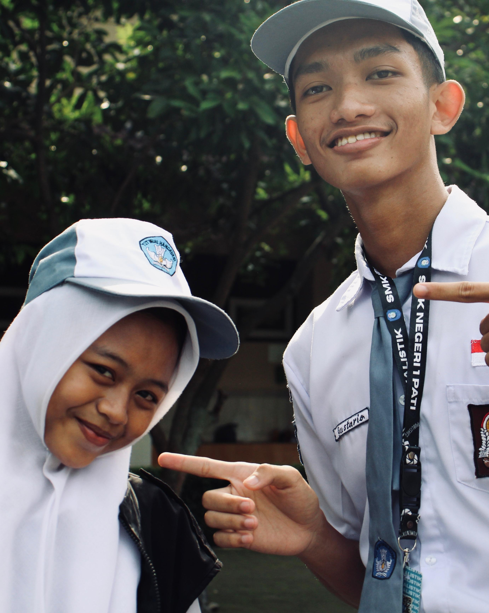
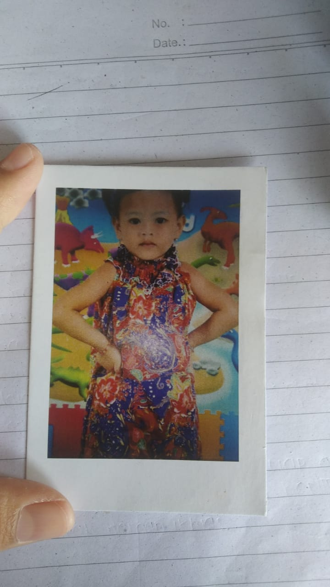
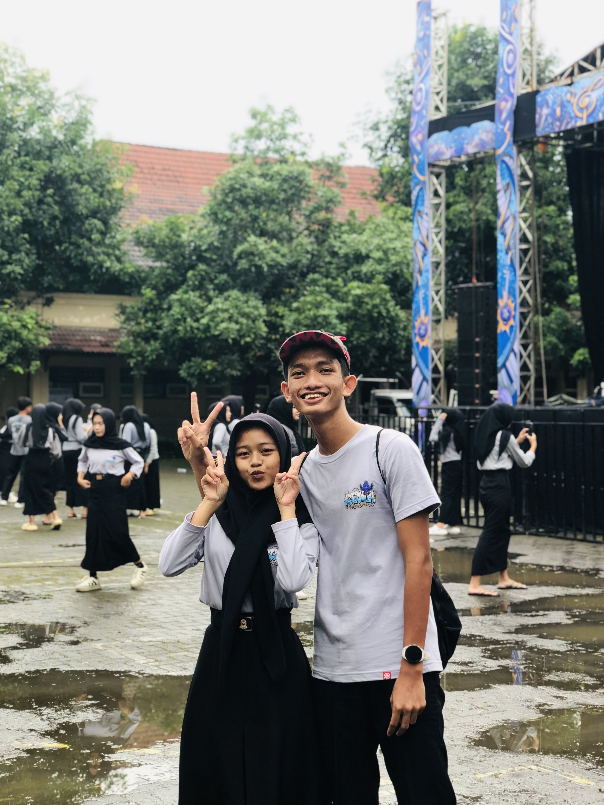

Happy 1st Anniversary,
Bubiee! ❤️
30 Oktober 2025 - 30 Oktober 2026
Perjalanan Kita
Berawal dari ekstra, berakhir di hatiku
Awal Mula
Ekstra Jurnalistik & Ring Basket
Terpesona saat pandangan pertama di ekstrakurikuler Jurnalistik. Hatiku langsung bertanya-tanya. Momen itu berlanjut saat kita akhirnya berbincang di bawah ring basket.
Masa PDKT
Dari Izin Ekstra ke Status WA
Mulai chat dari kamu yang izin tidak berangkat ekstra. Langsung aku save nomormu, dan kita mulai saling lempar kode tipis-tipis lewat status WA.
Hari Jadian
Pre-Order Paskibra Batch 2
Gagal ngajak date karena kamu sibuk, akhirnya aku nekat menyatakan cinta lewat surat yang diselipkan di dalam pesanan jajan pre-order Paskibra batch 2. Dan bahagianya, diterima lewat WA!
Galeri Kenangan Kita
Tiga bingkai untuk sejuta makna



Alasan Aku Mencintaimu
Klik / Tap kartunya ya!
Kamu itu orangnya sangat sederhana, dan itu yang bikin aku nyaman.
Kamu selalu nerima aku apa adanya, tanpa banyak nuntut.
Kamu yang paling rela ngubah sikap kamu demi aku. Aku sangat cinta padamu.